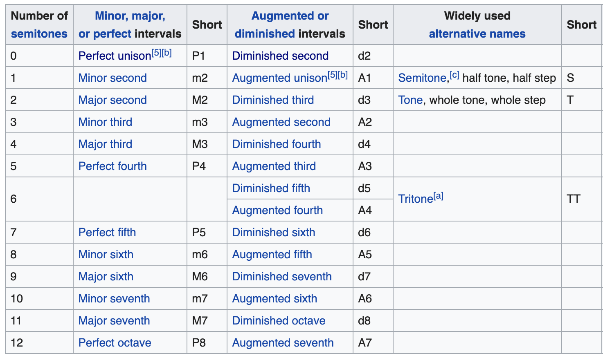
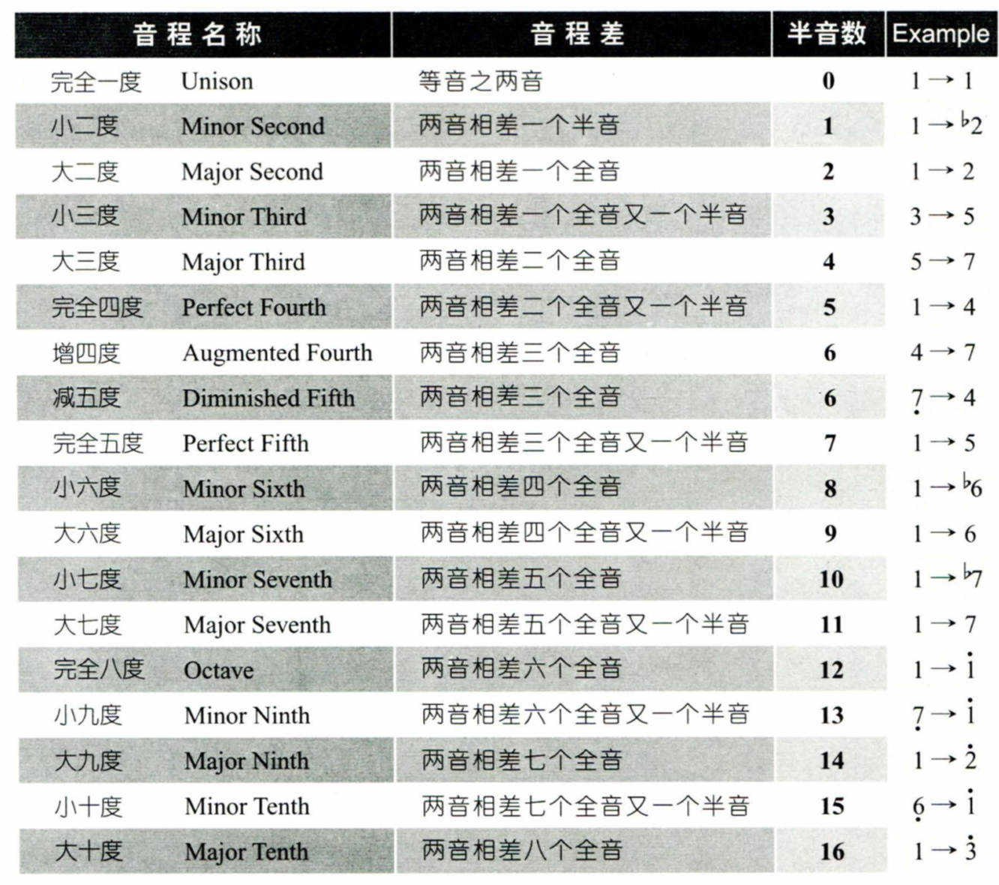

音程

摘自wikipedia

摘自《弹指之间》
| 半音数 |
Minor/major/perfect |
简称 |
例子 |
Augmented/diminished |
简称 |
例子 |
| 0 |
Perfect unision |
P1 |
C-C |
Diminished second |
d2 |
C-Dbb |
| 1 |
Minor second |
m2 |
C-Db |
Augmented unision |
A1 |
C-C# |
| 2 |
Major second |
M2 |
C-D |
Diminished third |
d3 |
C-Ebb |
| 3 |
Minor third |
m3 |
C-Eb |
Augmented second |
A2 |
C-D# |
| 4 |
Major third |
M3 |
C-E |
Diminished fourth |
d4 |
C-Fb |
| 5 |
Perfect fourth |
P4 |
C-F |
Augmented third |
A3 |
C-E# |
| 6 |
|
|
|
Diminished fifth |
d5 |
C-Gb |
| 6 |
|
|
|
Augmented fourth |
A4 |
C-F# |
| 7 |
Perfect fifth |
P5 |
C-G |
Diminished sixth |
d6 |
C-Ab |
| 8 |
Minor sixth |
m6 |
C-Ab |
Augmented fifth |
A5 |
C-G# |
| 9 |
Major sixth |
M6 |
C-A |
Diminished seventh |
d7 |
C-Bb |
| 10 |
Minor seven |
m7 |
C-Bb |
Augmented sixth |
A6 |
C-A# |
| 11 |
Major seven |
M7 |
C-B |
Diminished octave |
d8 |
C-Cb |
| 12 |
Perfect octave |
P8 |
C-C |
Augmented seventh |
A7 |
C-B# |
| 半音数 |
大调 |
小调 |
| 0 |
C |
A |
| 1 |
|
|
| 2 |
D |
B |
| 3 |
|
C |
| 4 |
E |
|
| 5 |
F |
D |
| 6 |
|
|
| 7 |
G |
E |
| 8 |
|
F |
| 9 |
A |
|
| 10 |
|
G |
| 11 |
B |
|
| 12 |
C |
A |
| 差多少半音 |
C |
D |
E |
F |
G |
A |
B |
C |
| C |
0 |
2 |
4 |
5 |
7 |
9 |
11 |
12 |
| D |
|
0 |
2 |
3 |
5 |
7 |
9 |
10 |
| E |
|
|
0 |
1 |
3 |
5 |
7 |
8 |
| F |
|
|
|
0 |
2 |
4 |
6 |
7 |
| G |
|
|
|
|
0 |
2 |
4 |
5 |
| A |
|
|
|
|
|
0 |
2 |
3 |
| B |
|
|
|
|
|
|
0 |
1 |